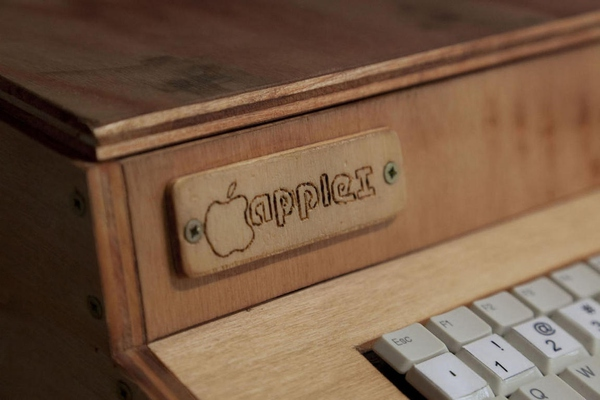
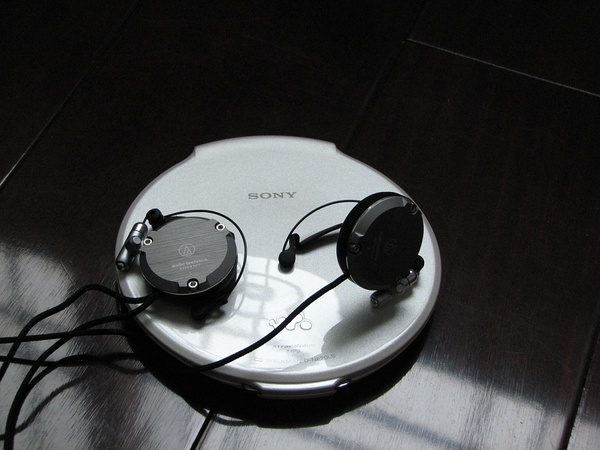

简介 Introduce
时光会带走很多，但总有一些时代的回忆
每个时代都有其独有的产物
科技在不断地进步，但有些时候
当我们回头看，会发现
那些精致的工业品，美到不可方物
在还是以大型机为主的市场上，美国的计算机制造商IBM公司首先推出了桌面计算机IBM5100。 这台重量25KG的PC内装有CPU、包含OS在内共数百KByte的ROM，最大64KB的RAM， 并将键盘和5英寸CRT显像管、磁带机等输入输出设备整合成一个手提箱大小的一体化PC。 因为其小型化便于携带，被称为“移动式计算机”。

Apple I 是苹果公司的第一项产品，由斯蒂夫·沃兹尼亚克设计并手工打造， 它于 1976 年 7 月以666.66 美元的价位开始贩售，约生产了 200 台。
到了 2008 年，约有 30~50 台 Apple I 尚存，使其成为非常罕见的收藏品， 而一般价位则在 14,000 至 16,000 美元之间。Apple I 于 1999 年曾被卖到 50,000 美元， 在 2010 年英国的一场拍卖会上以 21.36 万美元高价卖出。
Sony ne20，2004年11月上市，Sony的最后一款旗舰CD walkman 长×宽×厚(mm)：127×132.5×13.1，重量110克，是全球最小最薄最轻的CD walkman 镁铝合金外壳，钢琴烤漆工艺，蓝白红三色
Sony NE20是后期CD walkman的一个代表作，工 业设计、用料做工和声音完美的结合使得NE20成为了walkman中的艺术品。
Game Boy（简称GB，日语：ゲームボーイ）是任天堂公司在1989年发售的第一代便携式掌上游戏机。 GB拥有三个改版机型，分别是小尺寸的GBP，加入背光功能的GBL，以及彩色的GBC。
截止2003年，GB全球累计销量1.2亿台，Game Boy在2004年以前是销量最高的游戏机。 任天堂GB的下一代掌机为2001年推出的任天堂GBA。
苹果电脑最初把iPod作为Mac用户的独有的产品销售，但由于非Mac用户需求增加，公司加入了对Windows的兼容。 到2004年1月，iPod成为全美国最受欢迎的数码音乐播放器，占领了50%的市场份额。 到了2004年10月，iPod统治了美国的数位音乐播放器的销售，拥有超过92%的硬盘播放器和超过65%的所有类型播放器的市场。
IBM制造的第一款家用机械键盘
时光会带走很多，但总有一些时代的回忆
每个时代都有其独有的产物
科技在不断地进步，但有些时候
当我们回头看，会发现
那些精致的工业品，美到不可方物